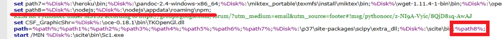

Ungit << Previous
Ungit << Previous
配置ungit
1.下載 ungit 與 node.js 程式碼
首先下載 kmol_2019.7z, 接著再下載 nodejs_with_ungit.7z, 兩者分別解開壓縮檔案, 然後將 nodejs 放入 kmol_2019 的 data 目錄中.
2.設定命令列搜尋路徑
接下來設定啟動 start.bat 中的 ungit 命列列搜尋路徑

3.設定 USERPROFILE 環境變數
最後, 為了讓 node.js 能夠使用 y:\home 作為使用者目錄, 在 start.bat 中加入
set USERPROFILE=%Disk%:\home

Ungit << Previous